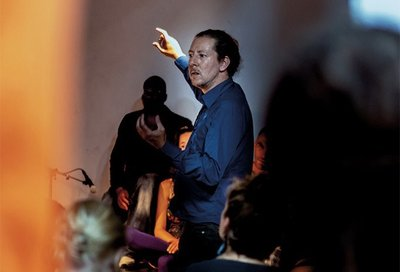

zaterdag
21:10-21:50
Clittenband
Altijd al gedroomd van een trio? Droom niet verder, want Clittenband komt en staat voor je klaar! In hun Nederlandstalige grootkunst wordt politiek poëtiek en lavendel erotiek. Het trio speelde vorig jaar ook op RAUWKOST, maar dit jaar organiseren ze een complete festivallocatie in de kerkers van Willem Twee: CLIT CITY.
vrijdag
22:00-01:00